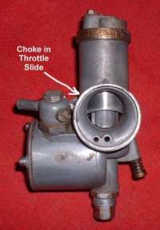
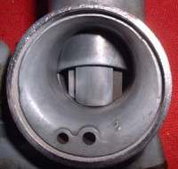
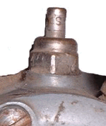

Carburetor Choke Plates

¶ When you choke something it means you restrict the air coming in. On a Carburetor we do this with a plate of some kind that drops down and restricts the air coming into the engine. The thing is this. As the Electric Starter or Kick Starter cranks the engine, the engine is sucking away (Vacuum) and instead of sucking air, which is restricted (Choked) it starts sucking extra fuel from the Needle Jet and the Idle Jet Port. That extra fuel enables the engine to start. I have only seen Choke Plates come in two styles.
- Guillotine Style
- Plate Style
Some Plate Chokes are spring loaded. The spring keeps them closed. The lever pushes them open. One thing to remember on Spring Loaded Plate Chokes. If the spring breaks, the Choke does not work right. Trouble is, it is not always obvious the spring is broken. So the Choke is not working and you crank and crank, overheat the very expensive starter and burn it out. If you think the Choke is on but the engine will not start, feel the Choke Lever with your hand and make sure the spring is not broken.
Some Choke Plates, not all, have little, spring loaded doors in the plate. This is because some engines need a bit more air if the vacuum gets too high in the Carburetor throat.
Back in the day there were some Amal Carburetors that had the choke (Air Valve) inside the Throttle Slide. You will probably never run across one of these Chokes. Curiously enough you can still buy a brand new Monobloc Carburetor from Amal. About £ 134.00 British Pounds or about $200.00 USA dollars. As of March, 2015.
|

Amal Monobloc Carbutetor |

Amal Monobloc
Choke/Air Valve
In Throttle Slide |

Amal Monobloc Carburetor |
§ On to Float Tickler §


Did this page help you? Would you like to help us? If so Click HERE
Copyright © 1999-2015 dansmc.com. All rights reserved.
|